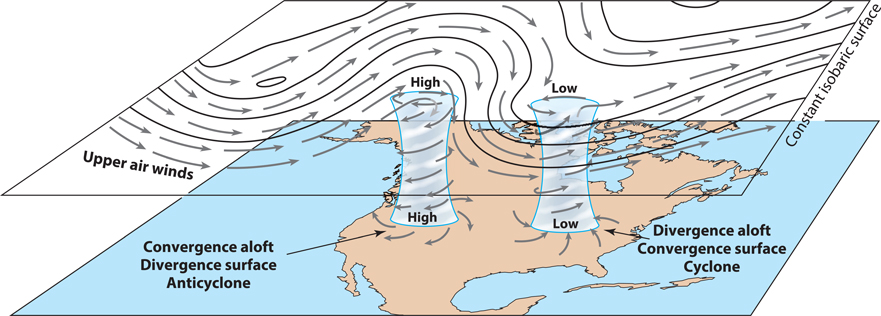

Climate & Weather
Week
GEOS 3410
Week Schedule
Tuesday
- Up/downwelling
- Polar fronts
- Storms
Thursday
- Climate-weather oscillations
- Teleconnections
Outside of class
- Week reading
A little more ocean motion
Primary production — a reprise

- Life proliferates where nutrients are abundant
- Nutrients accumulate in subsurface (biologic pump)
- Nutrients are abundant at sites of upwelling (shallow thermocline)
Atmospheric pressure
What looks familiar? What looks surprising?

Low Pressure (T)
High pressure (H)
Local H/L Pressure zones shift with seasons
What role do continents play?
Local H/L Pressure zones shift with seasons
What role do continents play?

Low Pressure (T)
July
High pressure (H)
Climate
An atmospheric circulation model + continents and ocean circulation(add large-scale complexity in a predictable way)
Weather is the small-scale unpredictability.
Jet streams: high-altitude winds

The polar front: Rossby waves in the polar jet streams

Why are the lobes of cold air Low pressure and warm air High pressure?
(hint: think about the directions of airflow in the jet stream)
(hint: think about the directions of airflow in the jet stream)
Rotating systems
| Pressure | Motion | NH rot. | SH rot. | |
|---|---|---|---|---|
| Cyclone | Low | Inward | ccw ↺ | cw ↻ |
| Anticyclone | High | Outward | cw ↻ | ccw ↺ |

Low-pressure frontal systems


⛈️ Weather!! ⛈️
Cold front advancing from West 
Warm front advancing from West 


Complex role of clouds in a changing climate: net warming

Tropical cyclone tracks

Where are these going? Why? Where do they stop? Why?
Monsoon climates
Dramatic seasonal changes in prevailing wind direction and precipitation
Monsoon climates

{kind=link}
{kind=link}
Monsoon climates
Next Week ()
- Week reading
- Tuesday:
- Thursday:
- Start studying for Midterm I — study guide on Canvas